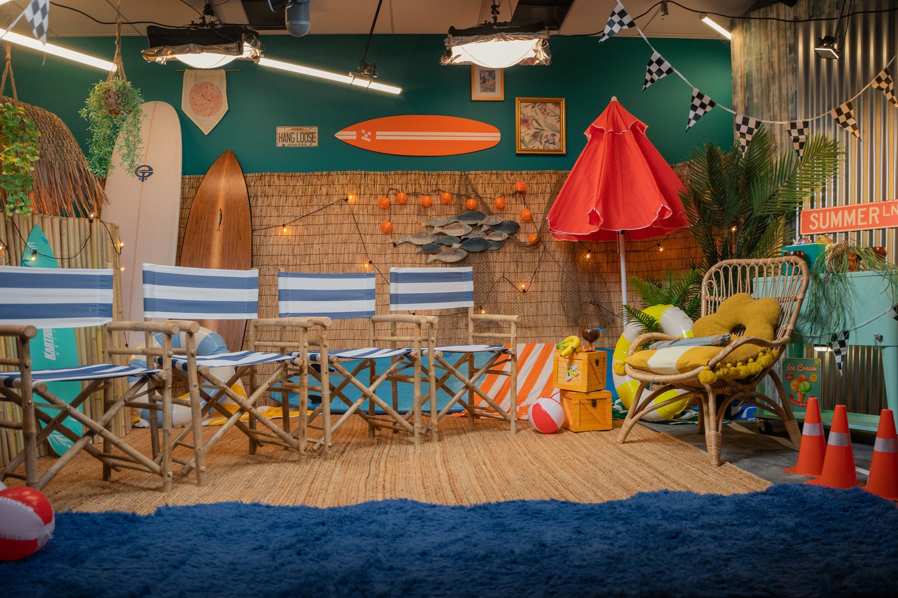
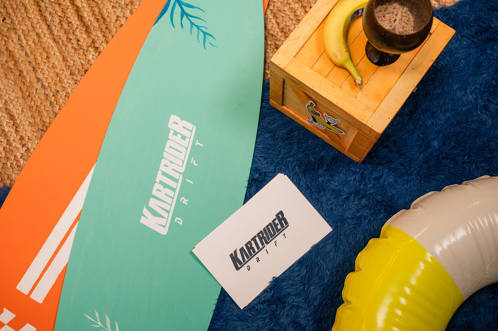
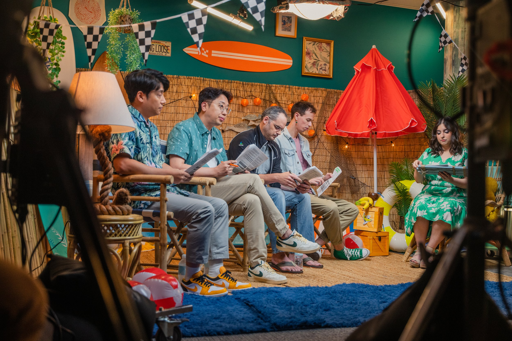
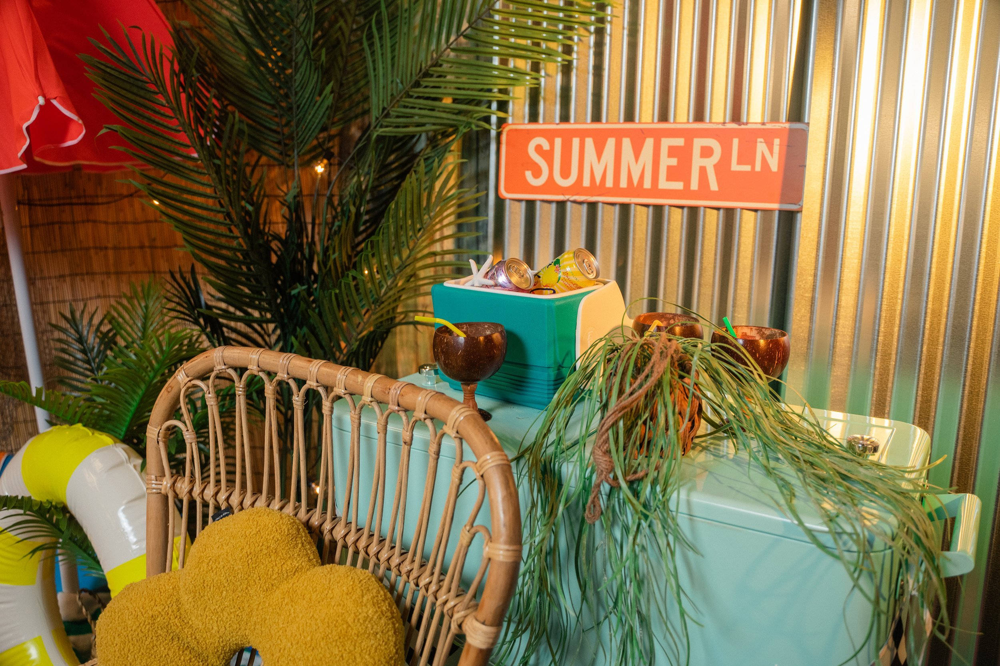

Nexon Kartrider Podcast Set
Client: NEXON
Year: 2023
Role: Art Direction | Custom Prop Design & Fabrication | Spatial Layout | Branded Signage & Environmental Design
To support the promotional campaign for Nexon, a leading global video game company, we designed and produced a custom studio set for an exclusive interview shoot. The concept was brought to life through a vibrant beach-themed environment, aimed at creating a fun, relaxed, and visually engaging atmosphere aligned with Nexon's dynamic brand identity. To bring in elements from KartRider, we incorporated race track-inspired details into one corner of the set—seamlessly integrating them with the beach theme to create a cohesive and immersive experience.
The set transformed a corporate office space with white walls and gray berber carpet into a coastal escape. The result was a lively and immersive backdrop that added personality and energy to the interview footage. This set not only enhanced the visual storytelling of the campaign, but also helped communicate Nexon’s playful, creative culture to fans and audiences worldwide.
Immersive beach-themed set design
Custom Props
The office became a sun-soaked beach paradise, complete with custom Nexon-branded surfboards, on-theme street signs, and other tropical props.
Interview Setup
By surrounding the interview with elements like surfboards, bamboo walls, palm leaves, and custom tropical props, we created a relaxed, creative environment that reflected Nexon's vibrant brand identity. The set design wasn’t just decorative — it became part of the storytelling, enhancing the tone and making the interview feel more dynamic, authentic, and memorable. For the beach-themed podcast set, we struck a careful balance between professionalism and laid-back style by choosing director’s chairs, accented with beach-inspired stripes and natural materials. This setup ensured a polished on-camera presence while keeping the talent comfortably upright—avoiding an overly casual look.




Produced by Nexon In-House Team & Paul Carrabba Jr